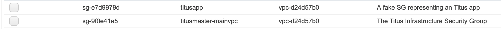

Creating security groups
Two security groups are needed. We are naming them titusapp and titusmaster-mainvpc:

For the infrastructure security group (titusmaster-mainvpc)
For inbound - From titusmaster-mainvpc security group, ALL TCP, All ICMP - From anywhere (including Internet), SSH

For outbound - All traffic